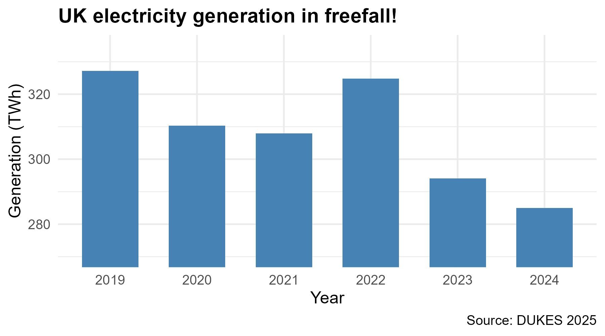
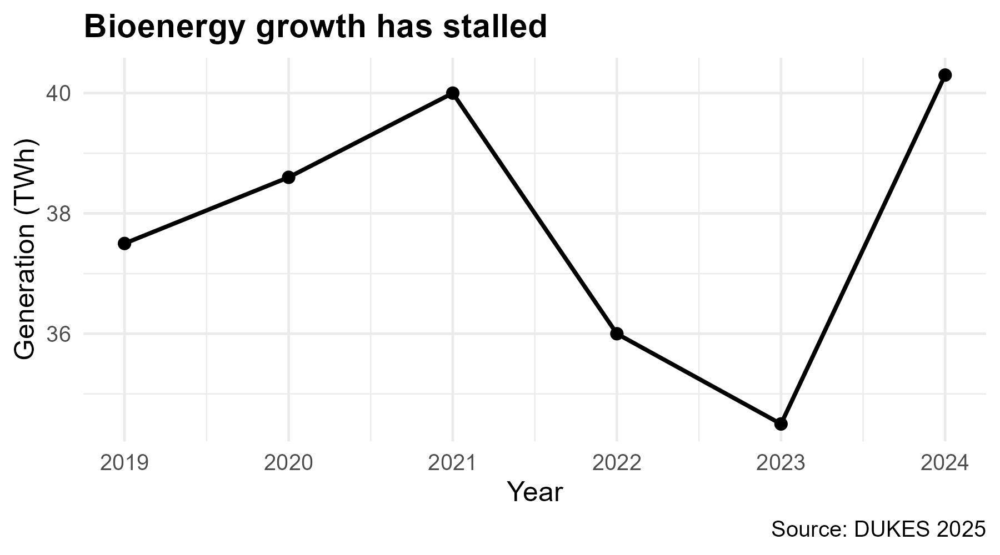
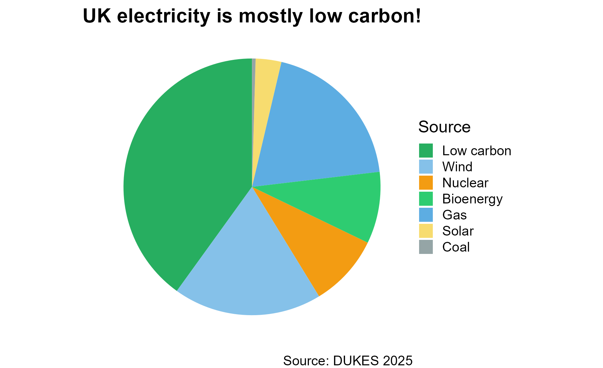

What do the numbers say?
Research Methods — Week 2
Recap
Where we are
Last week:
- What makes a testable question
- You met the biomass data and set up Git
This week: how to summarise and visualise data — and how to tell whether a number is big or small.
Questions?

Submit questions anonymously:
PollEv.com/geol
text geol to 07480 781235
Summarising data
🎓 Concept block 1
What are we trying to do?
Compress thousands of numbers into a few useful ones.
Three questions about any dataset:
- Where is the centre?
- How spread out is it?
- What shape is it?
Centre: mean vs median
Mean
The “balance point.”
Sensitive to extremes.
Pull one value way up → mean shifts.
Median
The middle value.
Robust to extremes.
Pull one value way up → median barely moves.
When do they differ? When the distribution is skewed.
Spread
- Standard deviation — average distance from the mean
- IQR — middle 50% of the data (robust to outliers)
- Range — max minus min (sensitive to one extreme value)
Spread matters as much as centre. A mean of 10 with SD of 1 is very different from a mean of 10 with SD of 50.
Shape
Symmetric
Mean ≈ median.
Many natural processes.
Skewed
Mean ≠ median.
Income, grain size, ore grades, permeability.
Always look at the distribution, not just the mean.
“Is that a big number?”
💬✏️ Exercise 1
The More or Less principle
A number without a comparator is meaningless.
Try these
UK biomass electricity: 38 TWh/year.
Big or small? Compared to what?
Total UK electricity is ~320 TWh. So biomass ≈ 12%.
Try these
Drax power station emits 12 Mt CO₂/year.
UK total CO₂: ~340 Mt. Drax is ~3.5% of the national total — from one building.
Try these
A single wind turbine produces about 6 GWh/year.
A UK household uses ~3,500 kWh/year. One turbine ≈ 1,700 homes.
The habit
Every time you see a number in this module, ask:
“Is that a big number?”
And its companion: “Compared to what?”
Data visualisation
🎓💻 Concept block 2
What makes a good figure?
- Show the data — don’t just summarise
- Make comparisons easy — same axes, same scales
- Don’t distort — honest axes, honest encodings
- Label clearly — axes, units, captions
Bad figures
- Truncated y-axes
- Dual y-axes
- 3D bar charts
- Pie charts for non-compositional data
- Cherry-picked date ranges
- Misleading area encodings
- Missing labels or units
- Colour that obscures rather than reveals
You’ll practise spotting these in a moment.
Live demo: building a ggplot
🖥️ Switching to WebR
The grammar of graphics
Data + Aesthetics + Geometries = a plot.
Everything in ggplot2 follows this pattern.
Spot the lie
✏️ Exercise 2
Instructions
I’ll show you some deliberately misleading charts.
For each one: what’s wrong, and how would you fix it?
Chart 1: The truncated axis

Fix: Start the y-axis at zero for bar charts. The visual area encodes the ratio, so a non-zero baseline distorts the comparison.
Chart 2: The cherry-picked date range

Fix: Show the full time range. Bioenergy grew from 4 TWh (2000) to 40 TWh (2024) — a tenfold increase hidden by this window.
Chart 3: The misleading pie chart

Fix: “Low carbon” double-counts Wind + Nuclear + Solar + Bioenergy. Slices sum to 156%. A pie must represent parts of a whole.
Distributions
🎓 Concept block 3
Why distributions matter
A histogram shows you what the mean and SD cannot:
- Is the data symmetric or skewed?
- Are there outliers?
- Is there more than one cluster?
The normal distribution
The familiar bell curve. Appears when many small, independent effects combine.
Central Limit Theorem (informally): averages of large samples tend toward normal, even if the underlying data aren’t.
This is why so many statistical tests assume normality — and why they often work even when the raw data are messy.
Log-normal distributions in geoscience
Many geological measurements are log-normal: skewed right, with a long tail of large values.
- Grain size
- Permeability
- Ore grades
- Earthquake magnitudes
When data are log-normal, the mean can be very different from the typical value.
When to log-transform
If your data:
- Are positive (no zeros or negatives)
- Span several orders of magnitude
- Are right-skewed
Then log() often makes them more symmetric and easier to analyse.
Your first ggplot
✏️💻 Integrative exercise
Try it
Open WebR. Using the biomass data:
- Make a histogram of one variable
- Make a scatter plot of two variables with a colour mapping
This is a check that you’re comfortable with ggplot2 syntax before the application session.
Wrap-up
Key points
- Always look at the distribution, not just the mean
- A number without a comparator is meaningless — “Is that a big number?”
- ggplot2: data + aesthetics + geometries
Exit ticket
UK biomass electricity output was 37 TWh in 2024. A classmate says: “That’s a lot — it must be making a real difference.”
What’s the most important question to ask first?
PollEv.com/geol
text geol to 07480 781235
Next time
Application session: “Making the biomass case”
You’ll produce the figures that will go into your briefing.